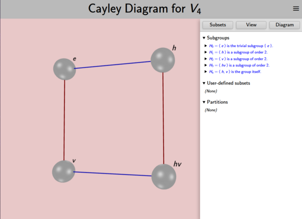
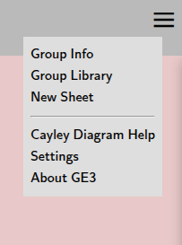

Each visualizer in Group Explorer can show up in three contexts: in a group info page, as an item in a sheet, or in full detail in its own editable window. This last case is the subject of this page.
Because each visualizer is different, this page covers just what all large visualizer views have in common, and refers you to each visualizer’s individual interface page for specific information about each.
You can obtain a large view of each visualizer one of two ways.
Some pages contain links that will create a large visualizer for you.
For instance, each group info page has a Views section that gives a preview of every visualizer for the group and clicking any one opens a large copy in its own window. Thumbnails of each visualizer on the main application page work the same way.
In this case, once you close the window, all your changes are lost.
You can create visualizers in sheets and open a large version by selecting Edit from the element’s context menu (right-click or tap-and-hold).
In this case, the large view is linked to the small view in the sheet, and all changes made to the large view in its own window are reflected in the image on the sheet and will be saved if you save the sheet.
Here is a screenshot of a window viewing a large version of a Cayley diagram.

Every large visualizer page is split into two halves, like the one shown above. The left half will always have the picture — the visualization. The right half will be controls that allow you to edit the picture. You can hide the right half by dragging it to the right; if it’s hidden, drag from the right edge of the screen to expose it again.
If you perform any of the edits described with the controls below but then wish to undo them and reset the large visualizer to its original state, just reload the page in your browser. Any changes you have made will be lost.
In the upper right-hand corner of every page you will find a menu icon

with the following options:
Takes you to the Group Info page, where you can see all the information Group Explorer has about the group.
Takes you to the Group Library, the main page of the app.
Opens a blank sheet, into which you can insert visualizations of any groups from the library and connect them with morphisms. To read more on sheets, see the sheets tutorial or the sheets reference.
Opens the Settings dialog, where you can control which groups appear in the library. See the Group Library page for details.
Opens the help page specific to the visualizer you have open:
There are some controls shared by several visualizers; their documentation is here:
Displays version information and links to the project website and source repository.